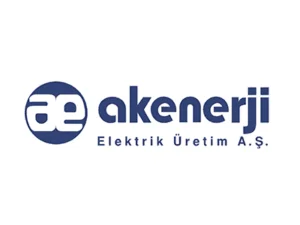
AkenerjiREFERANSLARIMIZ
Güvenin arkasında
güçlü projeler.
Savunma sanayisinden enerjiye, üretim tesislerinden üniversitelere kadar farklı sektörlerde ürün ve çözüm sunduğumuz kurumlardan bazıları.
42 KURUMBirlikte çalıştığımız
Birlikte çalıştığımız
değerli markalar.
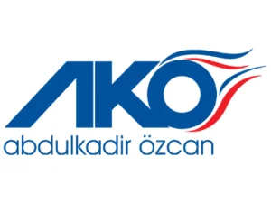
AKO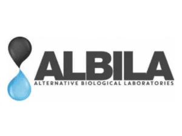
Albila ASELSAN
ASELSAN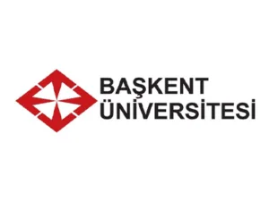
Başkent Üniversitesi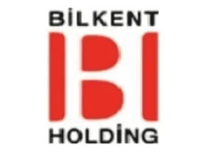
Bilkent Holding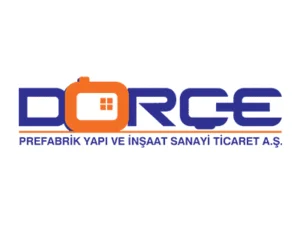
Dorce Eczacıbaşı
Eczacıbaşı Erdemir
Erdemir Eti Bakır
Eti Bakır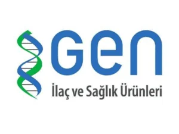
Gen İlaç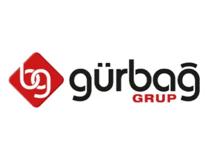
Gürbağ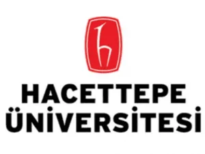
Hacettepe Üniversitesi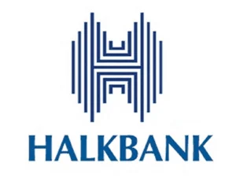
Halkbank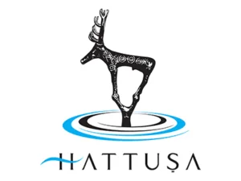
Hattuşa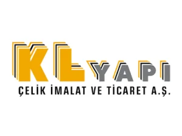
KL Yapı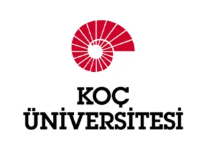
Koç Üniversitesi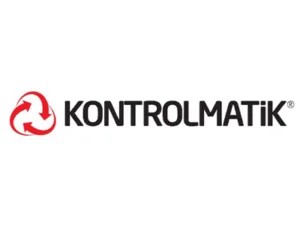
Kontrolmatik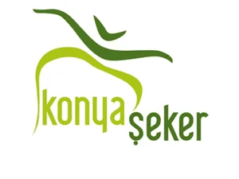
Konya Şeker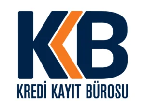
Kredi Kayıt Bürosu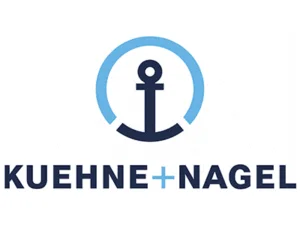
Kuehne + Nagel Limak
Limak MKE
MKE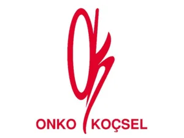
Onko Koçsel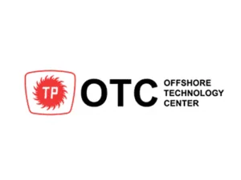
OTC OYKA
OYKA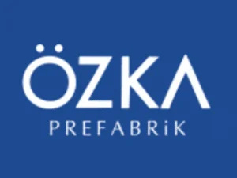
Özka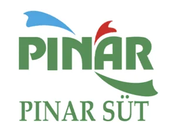
Pınar Süt Roketsan
Roketsan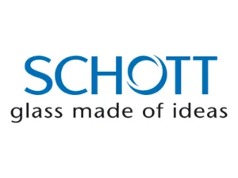
SCHOTT Şişecam
Şişecam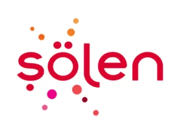
Şölen TEİAŞ
TEİAŞ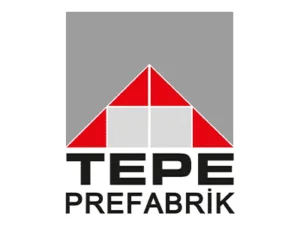
Tepe Prefabrik TOFAŞ
TOFAŞ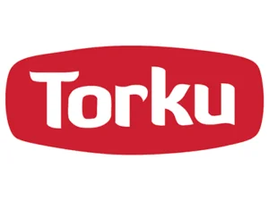
Torku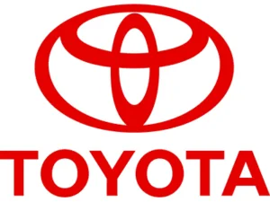
Toyota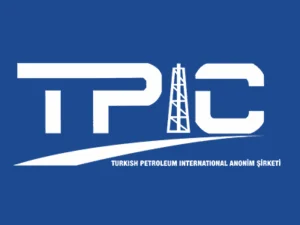
TPIC TÜBİTAK
TÜBİTAK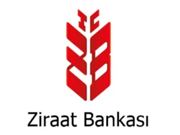
Ziraat BankasıİLETİŞİM
Projenizi birlikte
değerlendirelim.
Fan, elektrik ve ex-proof ihtiyaçlarınız için teknik detayları paylaşın; doğru ürün ve çözüm için size dönüş yapalım.
İletişime Geçin →